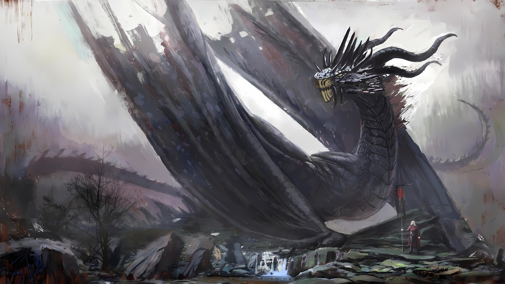

O maior e mais veterano dos dragões Targaryen, Balerion, foi montado por Aegon the Conqueror e mais tarde, ainda que durante um espaço de tempo muito curto, pelo Rei Viserys I. O dragão negro e vermelho morreu antes do início de House of the Dragon, mas a sua gigantesca caveira pode ser apreciada em exposição no Red Keep.